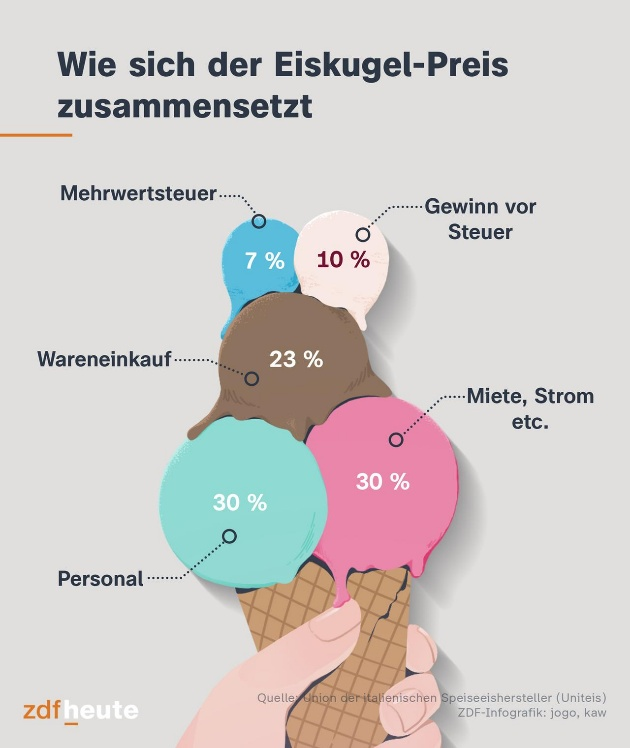
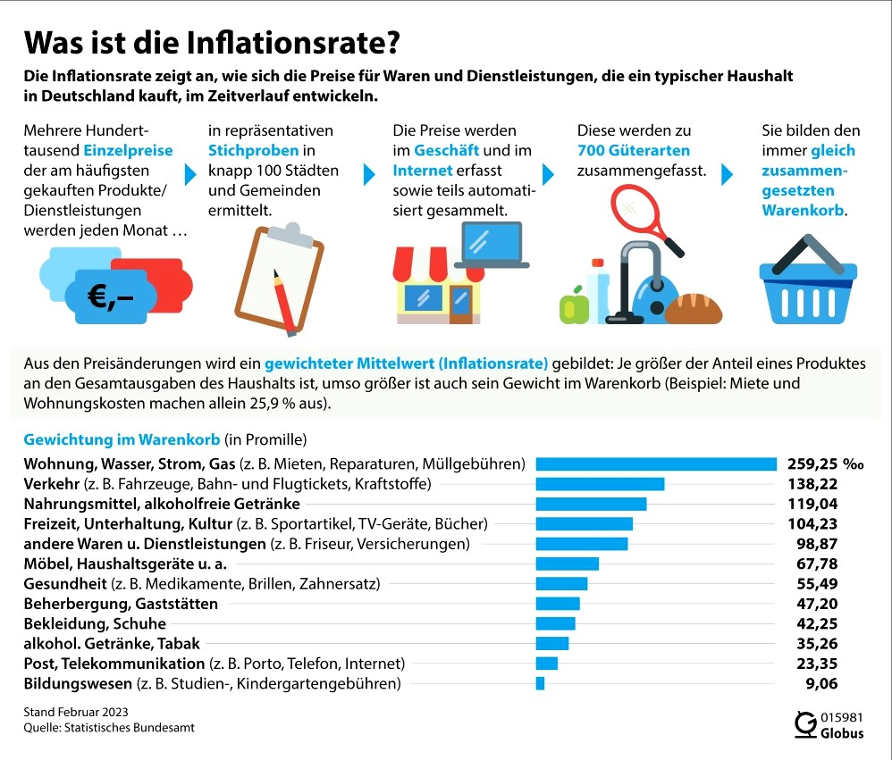

EGB VWL
Volkswirtschaftslehre am Erich-Gutenberg-Berufskolleg — aktuelles Thema Inflation (Arbeitsblatt „Es ist alles teurer geworden“) — на русском, термины по-немецки, с устными вопросами и объяснением
📚 Aus dem VWL-Unterricht: Inflation
Neues Thema — Einstieg Inflation. Alles с нуля, в маленьких порциях; в конце каждой части — вопросы, которые учитель может задать устно, с готовым ответом и объяснением грамматики. Нажми + в углу карточки, чтобы поставить её в Diese Woche, Erledigt или Später.
Es ist alles teurer geworden — Inflation
Einstieg · Sachverhalte 1–4 · Warenkorb · VPIИнфляция с нуля: смысл + что сказать на уроке
Preis · Preisniveau · Inflation · Kaufkraft, как считать проценты, из чего состоит цена, почему одного товара мало — простыми словами; в каждой части вопросы учителя с ответами
Arbeitsblatt: Sachverhalte 1–4 разобраны
Eiskugel (с калькулятором), ALDI Talk, Warenkorb и Preisindex (все пропуски восстановлены), Verbraucherpreisindex и Wägungsschema, образец текста про функцию индекса
Вопросы учителя: 19 устных + Selbsttest
Вопрос по-немецки, готовый ответ, разбор грамматики ответа; тест из 10 заданий
Archiv
alte Themen · behalten, aber aus dem WegИнфляция с нуля: смысл + что сказать на уроке
Preisniveau · Inflation · Kaufkraft · % изменение · из чего состоит цена · проблемы измерения
✋ Проверь себя
Was ist Inflation? — что такое инфляция?
- Inflation bedeutet — Подлежащее — Inflation, глагол bedeutet стоит вторым. В обычном повествовательном предложении изменяемая часть глагола стоит на втором месте (на первом может стоять любой блок: подлежащее, время, обстоятельство).
- , dass … — После dass («что») начинается придаточное предложение, а в придаточном изменяемый глагол уходит в самый конец: поэтому steigt в самом конце. Перед dass всегда ставится запятая.
- das allgemeine Preisniveau — Подлежащее придаточного, средний род (das). После артикля das прилагательное получает окончание -e (allgemeine).
- über längere Zeit — Устойчивый оборот «в течение долгого времени»; längere — сравнительная степень от lang.
- Das Geld verliert dann an Kaufkraft — Глагол verlieren an + Dativ = «терять в чём-то». Слово dann («тогда») — наречие, оно стоит после глагола и порядок слов не меняет.
Was ist der Unterschied zwischen Preis und Preisniveau? — чем Preis от Preisniveau?
- Der Preis gilt für … — V2: подлежащее + gilt. gelten für + Akkusativ = «относиться к, быть верным для».
- ein einzelnes Produkt — Produkt — средний род, Akkusativ совпадает с Nominativ. После ein окончание прилагательного -es.
- Das Preisniveau ist der Durchschnitt … — После sein второе существительное тоже в Nominativ (не в Akkusativ): das Preisniveau = der Durchschnitt.
- der Preise aller Güter und Dienstleistungen — Genitiv множественного числа («цен чего?»): артикль der для всех родов во мн. ч.; aller Güter — тоже Genitiv.
Was bedeutet Kaufkraft? — что такое Kaufkraft?
- Die Kaufkraft zeigt — V2: подлежащее + глагол.
- , wie viele Waren … — Это косвенный вопрос — предложение внутри предложения, оно начинается с вопросительных слов (wie viele). После wie viele начинается придаточное предложение, а в придаточном изменяемый глагол уходит в самый конец.
- kaufen kann — В конце придаточного стоят два глагола: сначала инфинитив kaufen, потом изменяемый модальный kann — изменяемая форма стоит самой последней.
- für eine bestimmte Menge Geld — für + Akkusativ; Menge — женский род, после eine прилагательное -e (bestimmte).
| Пример | Старое | Новое | Расчёт | Результат |
|---|---|---|---|---|
| Eiskugel | 1,00 € | 1,60 € | (1,60 − 1,00) : 1,00 × 100 | +60 % |
| Kino | 12,00 € | 15,00 € | (15 − 12) : 12 × 100 | +25 % |
| Schokolade | 1,00 € | 0,70 € | (0,70 − 1,00) : 1,00 × 100 | −30 % |
✋ Проверь себя
Wie berechnet man die prozentuale Veränderung? — как считать %?
- Man nimmt — man — «кто-то вообще» (безличное подлежащее), глагол стоит в форме 3-го лица единственного числа: nimmt.
- den neuen Wert — Прямое дополнение, Akkusativ: Wert — мужской род, поэтому артикль меняется der → den, а прилагательное neu → neuen.
- zieht … ab — abziehen — отделяемый глагол. Отделяемая приставка: в главном предложении она уходит в конец фразы, а в придаточном остаётся приклеенной к глаголу: zieht на втором месте, ab — в конце.
- und teilt das Ergebnis durch den alten Wert — Подлежащее man одно на три глагола, поэтому его не повторяют. teilen durch + Akkusativ = «делить на».
- Dann multipliziert man — Dann («потом») на первом месте. Если на первое место поставить не подлежащее (а, например, Dann), глагол всё равно остаётся вторым, а подлежащее переезжает после него: multipliziert — man.
Was ist der Ausgangswert? — что такое Ausgangswert?
- ist der Wert am Anfang — После sein — Nominativ. am = an dem (Dativ): «в начале».
- also — Здесь «то есть», вводит пояснение. Порядок слов после него не меняется.
- das Jahr, mit dem man vergleicht — Относительное придаточное: «год, с которым сравнивают». Вместо «mit das» ставится mit dem: предлог mit всегда требует Dativ, а Jahr — средний род. Глагол vergleicht — в конце.
- Er entspricht hundert Prozent — entsprechen + Dativ = «соответствовать». Число hundert стоит без артикля.

| Bestandteil | Anteil | Что это |
|---|---|---|
| Personal | 30 % | зарплаты работников (Mindestlohn!) |
| Miete, Strom etc. | 30 % | аренда помещения, электричество, отопление |
| Wareneinkauf | 23 % | молоко, сахар, сливки, вафли |
| Gewinn vor Steuer | 10 % | что остаётся владельцу до налога |
| Mehrwertsteuer | 7 % | налог на добавленную стоимость (Umsatzsteuer) |
| Summe | 100 % |
✋ Проверь себя
Warum wird eine Kugel Eis teurer? — почему шарик дорожает?
- sind gestiegen — Perfekt = вспомогательный глагол + Partizip II. Глаголы движения и изменения состояния (steigen) образуют Perfekt с sein, а не с haben. «Рамка»: sind на втором месте, gestiegen в конце.
- Двоеточие — : после него идёт пояснение причины.
- ist höher, sind teurer — Сравнительная степень: hoch → höher (гласная меняется), teuer → teurer. После sein прилагательное не склоняется.
- Deshalb erhöhen die Eisdielen … — Deshalb («поэтому») на первом месте. Если на первое место поставить не подлежащее (а, например, Deshalb), глагол всё равно остаётся вторым, а подлежащее переезжает после него: erhöhen — die Eisdielen. erhöhen + Akkusativ (ihre Preise).
- ihre Preise — ihre = «их», потому что Eisdielen во множественном числе (единственное число было бы seine/ihre по роду).
Geben alle Eisdielen höhere Kosten an die Kunden weiter? — все передают рост затрат?
- Вопрос Geben … weiter? — Вопрос «да/нет» начинается с глагола. Weitergeben — отделяемый: geben — в начале, weiter — в конце вопроса.
- nicht immer eins zu eins — В устной речи допустим короткий ответ без глагола. «eins zu eins» = «один к одному».
- wollen … anbieten — Рамка с модальным глаголом: wollen на втором месте, инфинитив anbieten в конце.
- einen vernünftigen Preis — Akkusativ мужского рода: ein → einen, vernünftig → vernünftigen.
- für ihre Kunden — für + Akkusativ; Kunden — множественное число.
| Год | Цена за 4 недели | Данные | Скорость |
|---|---|---|---|
| 2016 | 7,99 € | 750 MB | LTE bis 21,6 Mbit/s |
| 2018 | 7,99 € | 1,5 GB | LTE bis 21,6 |
| 2020 | 7,99 € | 3 GB | LTE bis 25 |
| 2023 | 8,99 € | 4 GB | 5G bis 50 |
| 2024 | 8,99 € | 10 GB | 5G bis 100 |
| 2025/26 | 8,99 € | 25 GB | 5G bis 100 |
✋ Проверь себя
Kann man von den Paketpreisen bei ALDI Talk auf die Preise in der ganzen Volkswirtschaft schließen? — можно ли делать вывод по ALDI Talk?
- Вопрос Kann man … schließen? — Вопрос «да/нет»: модальный глагол kann стоит первым, инфинитив schließen — в конце. schließen auf + Akkusativ = «делать вывод о».
- Nein, das geht nicht — Разговорное «так не получится».
- und der Preis bleibt fast gleich — Союз und стоит вне порядка слов: после него обычный порядок «подлежащее + глагол».
- , obwohl die Leistung besser wird — После obwohl («хотя») начинается придаточное предложение, а в придаточном изменяемый глагол уходит в самый конец: wird в конце. besser — особая сравнительная степень от gut.
- mit ganz unterschiedlichen Preisentwicklungen — mit + Dativ, множественное число. Прилагательное без артикля получает окончание -en (в Dativ множественного числа).
Welche Grundprobleme gibt es bei der Preismessung? — какие проблемы измерения цен?
- Erstens / Zweitens / Drittens — Эти слова стоят на первом месте, поэтому глагол остаётся вторым, а подлежащее идёт за ним: «Erstens ändert sich die Qualität».
- ändert sich — Возвратный глагол sich ändern («меняться»): sich стоит после глагола.
- der Produkte — Genitiv множественного числа: «качество чего?».
- Drittens kann man nicht alle Preise überall messen — Модальная рамка: kann на втором месте, messen в конце. «nicht» отрицает alle Preise.
- , deshalb nimmt man Stichproben — Deshalb («поэтому») вводит следствие; после него — глагол nimmt, потом man.
Arbeitsblatt: Sachverhalte 1–4 разобраны
Eiskugel · ALDI Talk · Warenkorb · Verbraucherpreisindex
- Schätzung — запиши, сколько, по-твоему, стоил шарик (до проверки!). Так видно, насколько мы «чувствуем» инфляцию.
- Tatsächlicher Preis — возьми реальные цены из статьи (ссылка в листе: coupons.de, Eiskugel-Preisvergleich).
- 2011 — это Ausgangswert (100 %), в колонке % пишем «Ausgangswert».
- Для остальных лет: (Preis − Preis 2011) : Preis 2011 × 100.
Wie haben sich die Preise für Eis entwickelt? — как менялись цены на мороженое?
- sind … gestiegen — Perfekt с sein (steigen — изменение состояния). Рамка: sind на втором месте, gestiegen в конце.
- in den letzten Jahren — in + Dativ множественного числа («в последние годы»): артикль den, у существительного в Dativ мн. ч. добавляется -n (Jahre → Jahren), прилагательное после den — -en.
- Das liegt an höheren Kosten — liegen an + Dativ = «причина в». Höheren Kosten — Dativ мн. ч.; прилагательное без артикля получает -en.
- zum Beispiel für … — Оборот «например, на»; перечисление через запятую и und.
Warum ist der Preis überall unterschiedlich? — почему цены разные?
- eine Rolle spielen — Устойчивое выражение «играть роль»; Rolle — женский род, Akkusativ.
- , weil Miete und Löhne … sind — После weil («потому что») начинается придаточное предложение, а в придаточном изменяемый глагол уходит в самый конец: sind в конце. Два подлежащих через und → глагол во множественном числе.
- Außerdem kommt es darauf an — Außerdem («кроме того») на первом месте → kommt вторым, es после. ankommen auf + Akkusativ = «зависеть от»; darauf an — приставка an уходит в конец.
- woher die Zutaten kommen — Косвенный вопрос: после woher глагол kommen — в конце.
| Jahr 1 | Jahr 2 | Jahr 3 | Jahr 4 | |
|---|---|---|---|---|
| Schokolade (50×) | 50,00 | 35,00 | 55,00 | 40,00 |
| Apfelsaft (30×) | 45,00 | 60,00 | 60,00 | 60,00 |
| Kino (5×) | 60,00 | 75,00 | 75,00 | 70,00 |
| Schuhe (2×) | 145,00 | 160,00 | 200,00 | 160,00 |
| Wert des Warenkorbs | 300,00 | 330,00 | 390,00 | 330,00 |
| Jahr 1 | Jahr 2 | Jahr 3 | Jahr 4 | |
|---|---|---|---|---|
| Preisindex | 100 | 110 | 130 | 110 |
| Preissteigerungsrate | — | +10 % | +18,2 % | −15,4 % |
✋ Проверь себя
Wie berechnet man den Preisindex? — как считать индекс?
- den Wert des Warenkorbs — den Wert — Akkusativ; des Warenkorbs — Genitiv («стоимость чего?»): у мужского и среднего рода в Genitiv артикль des и окончание -s.
- im Vergleichsjahr / im Basisjahr — im = in dem; Dativ: «в каком году?».
- durch den Wert — teilen durch + Akkusativ.
- und multipliziert mit hundert — Подлежащее man одно на оба глагола, поэтому не повторяется.
Was bedeutet ein Preisindex von 110? — что значит индекс 110?
- , dass die Preise … gestiegen sind — После dass начинается придаточное предложение, а в придаточном изменяемый глагол уходит в самый конец. Здесь два глагола: причастие gestiegen стоит перед изменяемым sind.
- im Vergleich zum Basisjahr — im Vergleich zu + Dativ = «по сравнению с»; zum = zu dem.
- um zehn Prozent — um + Akkusativ отвечает на вопрос «на сколько?».
Was bedeutet eine negative Preissteigerungsrate? — что значит минус?
- Dann sinken die Preise — Dann («тогда») на первом месте → Если на первое место поставить не подлежащее (а, например, Dann), глагол всё равно остаётся вторым, а подлежащее переезжает после него.
- im Durchschnitt — «в среднем»: in + dem (Dativ).
- Das nennt man Deflation — На первом месте стоит дополнение das («это»), поэтому глагол nennt вторым, а подлежащее man после него. nennen + Akkusativ: «называть чем-то».

- Каждый месяц собирают несколько сотен тысяч Einzelpreise самых покупаемых товаров и услуг.
- Цены берут Stichproben в репрезентативных городах (около 100).
- Цены берут в магазинах и в интернете, частично автоматически.
- Всё объединяют в ~700 Güterarten.
- Из них получается постоянный Warenkorb (всегда одинаково составленный).
- Считают gewichteten Mittelwert — это и есть Inflationsrate.
| Gruppe | ‰ | ≈ % |
|---|---|---|
| Wohnung, Wasser, Strom, Gas | 259,25 | 25,9 |
| Verkehr | 138,22 | 13,8 |
| Nahrungsmittel, alkoholfreie Getränke | 119,04 | 11,9 |
| Freizeit, Unterhaltung, Kultur | 104,23 | 10,4 |
| andere Waren u. Dienstleistungen | 98,87 | 9,9 |
| Möbel, Haushaltsgeräte u. a. | 67,78 | 6,8 |
| Gesundheit | 55,49 | 5,5 |
| Beherbergung, Gaststätten | 47,20 | 4,7 |
| Bekleidung, Schuhe | 42,25 | 4,2 |
| alkohol. Getränke, Tabak | 35,26 | 3,5 |
| Post, Telekommunikation | 23,35 | 2,3 |
| Bildungswesen | 9,06 | 0,9 |
✋ Проверь себя
Wofür braucht man den Verbraucherpreisindex? — зачем нужен VPI?
- wie sich die Preise … verändern — Косвенный вопрос: После wie начинается придаточное предложение, а в придаточном изменяемый глагол уходит в самый конец: verändern в конце; sich — возвратное местоимение.
- , die private Haushalte kaufen — Относительное придаточное: die заменяет «Waren und Dienstleistungen» (мн. ч., Akkusativ — их покупают). Подлежащее — private Haushalte, глагол kaufen в конце.
- Daraus berechnet man … — Daraus («из этого») на первом месте → Если на первое место поставить не подлежащее (а, например, Daraus), глагол всё равно остаётся вторым, а подлежащее переезжает после него.
Was ist der Warenkorb? — что такое Warenkorb?
- enthält — Приставка ent- неотделяемая, поэтому глагол стоит цельным словом.
- , die ein typischer Haushalt kauft — Relativsatz: die — это Güter und Dienstleistungen (мн. ч., Akkusativ). Подлежащее ein typischer Haushalt (м. р., Nominativ: ein … -er), kauft в конце.
- Er bleibt in seiner Zusammensetzung gleich — bleiben + прилагательное. in seiner Zusammensetzung — in + Dativ женского рода (seiner).
Was ist das Wägungsschema? — что такое Wägungsschema?
- legt … fest — festlegen — отделяемый глагол: legt на втором месте, fest — в конце главной части.
- wie wichtig jedes Gut im Warenkorb ist — Косвенный вопрос → ist в конце. jedes Gut — средний род.
- Es richtet sich nach den Ausgaben — sich richten nach + Dativ = «ориентироваться на». Ausgaben — мн. ч., Dativ: nach den Ausgaben.
- eines durchschnittlichen Haushalts — Genitiv мужского рода: eines + прилагательное -en + у существительного -s.
Warum muss das Wägungsschema angepasst werden? — почему обновляют?
- Weil … — В разговоре на «Warum?» можно ответить одним придаточным с weil; глагол verändern — в конце.
- sich verändern — Возвратный глагол «меняться».
- andere Waren als vor zehn Jahren — Сравнение «другие … чем» через als. vor zehn Jahren — vor + Dativ множественного числа («десять лет назад»).
Вопросы учителя: Inflation, Warenkorb, VPI
19 вопросов с ответами и грамматикой + Selbsttest
Erklären Sie den Begriff Inflation. — объясните «инфляция»
- ein dauerhafter Anstieg — Nominativ мужского рода после sein: ein + прилагательное -er (dauerhafter).
- des allgemeinen Preisniveaus — Genitiv среднего рода: des + прилагательное -en + существительное -s.
- Man kann dann … kaufen — Модальная рамка: kann на втором месте, инфинитив kaufen в конце; всё остальное между ними.
- mit der gleichen Geldmenge — mit + Dativ женского рода: der; прилагательное gleich → gleichen.
Was ist der Unterschied zwischen Inflation und Deflation? — в чём разница инфляции и дефляции?
- Bei der Inflation steigt das Preisniveau — На первом месте «Bei der Inflation» (bei + Dativ), глагол steigt вторым, подлежащее das Preisniveau — после него.
- bei der Deflation sinkt es — Та же схема. es заменяет das Preisniveau (средний род) и стоит после глагола.
Was versteht man unter Kaufkraft? — что понимают под Kaufkraft?
- Unter Kaufkraft versteht man — verstehen unter + Dativ = «понимать под». Блок «Unter Kaufkraft» на первом месте → глагол versteht вторым, man после него.
- , wie viele Güter … kaufen kann — Косвенный вопрос → глаголы в конце: kaufen kann.
- für sein Geld — sein = «своё», относится к man.
Wie rechnet man eine prozentuale Veränderung aus? — как считать процент изменения?
- zwischen neuem und altem Wert — zwischen + Dativ (здесь вопрос «где/между чем?»); без артикля прилагательные получают окончание Dativ мужского рода -em.
- teilt sie durch den alten Wert — sie заменяет die Differenz (женский род, Akkusativ).
- Три глагола — Подлежащее man одно на berechnet / teilt / multipliziert.
Wie hat sich der Mindestlohn seit 2015 entwickelt? — как менялся Mindestlohn?
- 2015 betrug er — Год на первом месте → глагол вторым, er после. betrug — Präteritum от betragen (неправильный глагол).
- seit dem 1. Januar 2026 — seit + Dativ: dem. Порядковое число «первого» читается «ersten».
- liegt er bei 13,90 € — liegen bei = «составлять».
- eine Steigerung von etwa 63 Prozent — Steigerung — женский род; von + число.
Warum steigen die Preise in Eisdielen? — почему дорожает мороженое?
- werden teurer — werden + прилагательное = «становиться»; teurer — сравнительная степень.
- Deshalb erhöhen die Eisdielen — Deshalb на первом месте → Если на первое место поставить не подлежащее (а, например, Deshalb), глагол всё равно остаётся вторым, а подлежащее переезжает после него.
- ihre Preise — ihre = «их» (Eisdielen — мн. ч.); Preise — Akkusativ мн. ч.
Wie ist der Preis für eine Kugel Eis zusammengesetzt? — из чего состоит цена шарика?
- besteht aus + Dativ — bestehen aus = «состоять из»; слова без артикля (Personal, Miete).
- mit je dreißig Prozent — mit + Dativ; je = «по».
- Перечисление — Когда части повторяются, лишнее слово (Prozent) опускают — так говорят в речи.
Was ist ein Warenkorb? — что такое Warenkorb?
- eine Auswahl typischer Güter — Genitiv множественного числа без артикля: typischer (-er).
- , die ein Haushalt kauft — Relativsatz, kauft в конце.
- Mit ihm misst man — «Mit ihm» («им») на первом месте → misst вторым → man после него. ihm = dem Warenkorb (м. р., Dativ после mit).
Warum reicht ein einzelnes Produkt nicht aus, um die Inflation zu messen? — почему одного товара недостаточно?
- Вопрос … reicht … aus, um … zu messen — ausreichen — отделяемый: reicht … aus. «um … zu + инфинитив» = «чтобы».
- etwas über seinen eigenen Preis — über + Akkusativ: «о». Preis — м. р., поэтому seinen eigenen.
- , deshalb braucht man einen Warenkorb — Следствие: deshalb → braucht → man; brauchen + Akkusativ: einen Warenkorb.
Welche Probleme gibt es bei der Preismessung? — проблемы измерения цен?
- Три предложения — В каждой части свой подлежащее + глагол; они соединены запятыми и союзом und. Союзы und, aber, denn не меняют порядок слов.
- nicht alle Güter sind gleich wichtig — nicht отрицает «alle»: не все одинаково важны.
- Deshalb nimmt man Stichproben — Deshalb на первом месте → Если на первое место поставить не подлежащее (а, например, Deshalb), глагол всё равно остаётся вторым, а подлежащее переезжает после него.
Was ist der Verbraucherpreisindex? — что такое VPI?
- von etwa 700 Gütern — von + Dativ мн. ч.: Güter → Gütern (к существительному добавляется -n).
- Das Statistische Bundesamt — Средний род; после das прилагательное получает -e.
- berechnet ihn — ihn = den Verbraucherpreisindex (мужской род, Akkusativ: den → ihn).
Wer berechnet den Verbraucherpreisindex? — кто считает?
- Ответ без глагола — Для устной речи достаточно ответить на «Wer?» только подлежащим.
- kurz Destatis — Вставка «коротко: Destatis».
- in Wiesbaden — in + город — «в».
Was ist das Wägungsschema? — что такое Wägungsschema?
- mit den Gewichten — mit + Dativ множественного числа: Gewicht → Gewichten.
- Je größer …, desto größer … — Конструкция «чем …, тем …»: в части с je — придаточное (ist в конце), в части с desto — главное предложение, где глагол сразу следует за «desto + прилагательное»: «desto größer ist das Gewicht».
- Anteil an + Dativ — «доля в чём-то»: an den Ausgaben.
Warum hat Wohnen ein großes Gewicht im Warenkorb? — почему жильё весит много?
- ausgeben — В придаточном (после weil) приставка не отделяется: «… Nebenkosten ausgeben» стоит цельно в конце.
- einen großen Teil ihres Einkommens — Akkusativ (что тратят?) + Genitiv (чего? — «её дохода»): ihres Einkommens.
- Allein die Wohnkosten machen … aus — ausmachen — отделяемый: machen на втором месте, aus в конце. «rund ein Viertel» — «около четверти».
Was bedeutet eine Inflationsrate von 3 Prozent? — что значит 3 %?
- Основная часть — Как в вопросе про Preisindex: dass → gestiegen sind в конце.
- verglichen mit dem Vorjahr — Причастие + mit + Dativ = «по сравнению с прошлым годом».
Warum sind Luxusgüter für die meisten Verbraucher weniger wichtig? — почему роскошь не так важна?
- Weil sie nur wenige Menschen kaufen — Здесь sie = Luxusgüter (Akkusativ), а подлежащее — «wenige Menschen» (кто покупает). В придаточном kaufen — в конце.
- kaum Gewicht — kaum = «почти нет».
Welche Folgen hat Inflation für Verbraucher? — какие последствия для потребителей?
- verliert an Wert — verlieren an + Dativ.
- sich weniger leisten — sich etwas leisten = «позволить себе»; sich здесь в Dativ.
- , wenn … steigt — После wenn («если») начинается придаточное предложение, а в придаточном изменяемый глагол уходит в самый конец: steigt в конце. «im gleichen Maß» — in dem gleichen Maß, «в той же мере».
Wie kann man seine persönliche Inflation berechnen? — как посчитать личную инфляцию?
- kann … benutzen und … eingeben — Один модальный глагол kann на два инфинитива в конце: «… benutzen und … eingeben».
- von Destatis — von + Dativ.
- Dann bekommt man — Dann на первом месте → Если на первое место поставить не подлежащее (а, например, Dann), глагол всё равно остаётся вторым, а подлежащее переезжает после него.
Nennen Sie ein Beispiel für einen Preis, der gleich bleibt, obwohl sich das Produkt verbessert. — пример: цена та же, продукт лучше
- aber — Союз aber не меняет порядок слов: подлежащее + глагол.
- wächst — wachsen — неправильный глагол, в 3-м лице единственного числа гласная меняется: a → ä.
- von 750 Megabyte auf 25 Gigabyte — von … auf … = «с … до …».